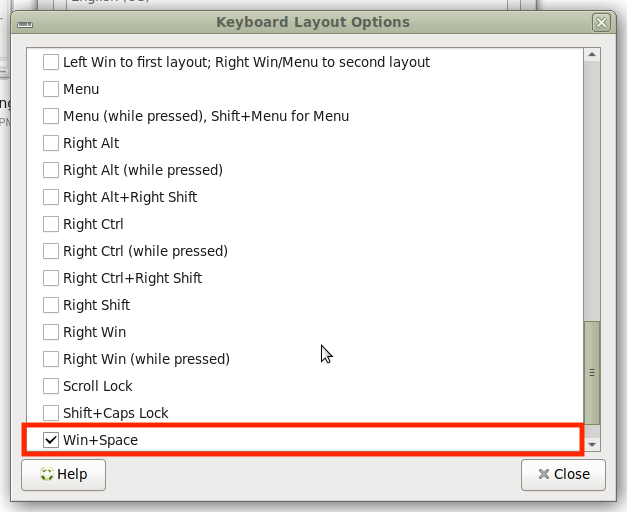

MATE on FreeBSD: macOS-Like Setup Guide: Font Rendering, UI Tweaks, and Settings
Font rendering settings
Keyboard and mouse settings
Interface settings
Turn on TearFree
Wallpapers
macOS theme for Mate
As I mentioned earlier, I noticed similarities between FreeBSD and macOS—after 20 years of using macOS, working with FreeBSD feels like coming home. But I don’t like the font rendering used in non-macOS systems. Partly because Apple did it very well — Steve Jobs had a great understanding of typography — and partly because I’m just used to it.
In this article, I’ll share my method for configuring MATE on FreeBSD to resemble macOS in appearance, behavior, and usability. This makes the transition from a MacBook to a FreeBSD machine smoother, eliminating the need to relearn shortcuts or adjust to a completely different interface. Here’s what my FreeBSD setup looks like right now:
{kind=link}
I assume you already have FreeBSD and MATE installed. This is how I set it up on my Mac. Your preferences may differ.
Tweaking MATE's UI Fonts
The topic of replicating macOS-style font rendering on X Server is widely debated online. I chose a different approach: instead of relying solely on discussion, I compared screenshots from both macOS and X Server to fine-tune the font rendering settings for a closer match.
To make MATE’s font rendering resemble macOS, I connected both systems to a 1080p monitor and captured screenshots. Then, using Figma’s zoom tool, I adjusted various FreeType settings step by step to get as close a match as possible.
{kind=link}
Let’s compare the results. They’re not identical, but this is the closest I could achieve:
{kind=link}
The font SF Pro Display works better than SF Pro:
{kind=link}
Replaced MATE’s UI fonts to SF Pro Display. Put SF Pro Display, Regular and SF Pro Display, Bold to ~/.fonts folder and set it up in MATE’s settings. Add SF Mono, for Fixed width fonts too:
Font rendering needs to be tweaked. In ~/.profile add:
export FREETYPE_PROPERTIES="cff:no-stem-darkening=0.0 autofitter:no-stem-darkening=0.0"
Set Smoothing to Grayscale and Hinting to None (I also set font size to be 10 and DPI to 95):
Fonts in macOS (left) vs. MATE (right). You may notice that fonts in macOS appear bolder—not just because Apple often uses semibold and bold weights in the UI, but also due to how macOS renders text. With the settings I provide, you can achieve a look that’s quite similar. It won’t be an exact match, as MATE and macOS handle letter rendering, letters spacing, text color and other typographic details differently, but it will be much closer than MATE’s default appearance:
{kind=link}
{kind=link}
In the Appearance settings hide icons from menu and buttons:
Change Keyboard Shortcuts
Change Keyboard Preferences

Change Mouse Settings
Change MATE Terminal Shortcuts
Interface settings
My /etc/rc.conf
dbus_enable="YES"
keyrate="fast"
moused_enable="YES"
powerd_enable="YES"
kld_list="amdgpu"
Turn on TearFree
Check to see if it supports it. It should show “TearFree”: “auto, on, off:
xrandr —props
In /usr/local/etc/X11/xorg.conf.d/10-amdgpu.conf:
Section "OutputClass"
Identifier "AMDgpu"
MatchDriver "amdgpu"
Driver "amdgpu"
Option "TearFree" "true"
EndSection
Then, use this command again to see if TearFree is enabled. It should show TearFree: On:
xrandr —props
Wallpapers
My favorite wallpapers are from macOS Sequoia and macOS Ventura.
MATE’s Theme & Icons & Cursors
Download WhiteSur-Dark.tar.xz file and unpack it in the ~/.themes, then select in Appearance Preferences:
Download the 01-WhiteSur.tar.xz file and unpack it in the ~/.icons folder. Important note: Rename the unpacked folder to WhiteSur-Dark with a capital “D” for “Dark.” Otherwise, the WhiteSur-Dark theme will not recognize it.
Unpack cursors to the ~/.icons.
Dock
Will be added soon.
File Manager
I changed the default file manager from Caja to Thunar because Thunar is visually cleaner and allows you to right-click on categories in the sidebar to change them.
{kind=link}
Set Thunar in Mate Settings > Prefrered Applications > System > File Manager:
Dock
I’m using x11/plank with GTK+ theme:
{kind=link}
{kind=link}
{kind=link}
Hide Desktop Icons
Open dconf-editor and turn off the system icons on the desktop, including the trash bin, since we have them in the Dock anyway. Org > Mate > Caja > Desktop > volumes-visible:
Firefox Settings
To change CTRL to CMD in Firefox go to about:profiles, find the Default Profile (marked “Yes”), open that folder, and create a user.js file with the following content:
user_pref("ui.key.accelKey", 224);
To disable the ability to open the menu by pressing Alt (since it’s often pressed accidentally), add the following in about:config:
ui.key.menuAccessKeyFocuses: false
macOS-like Shadow by Using Picom
WIP: Method for comparing Picom settings 1:1 to the macOS window shadow.